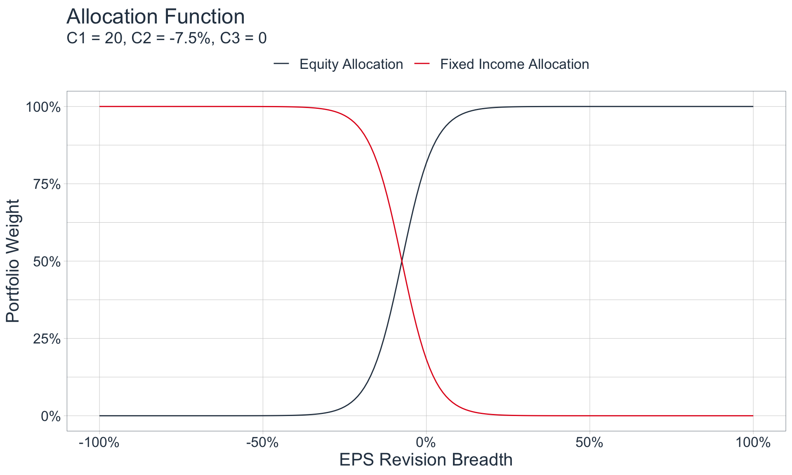
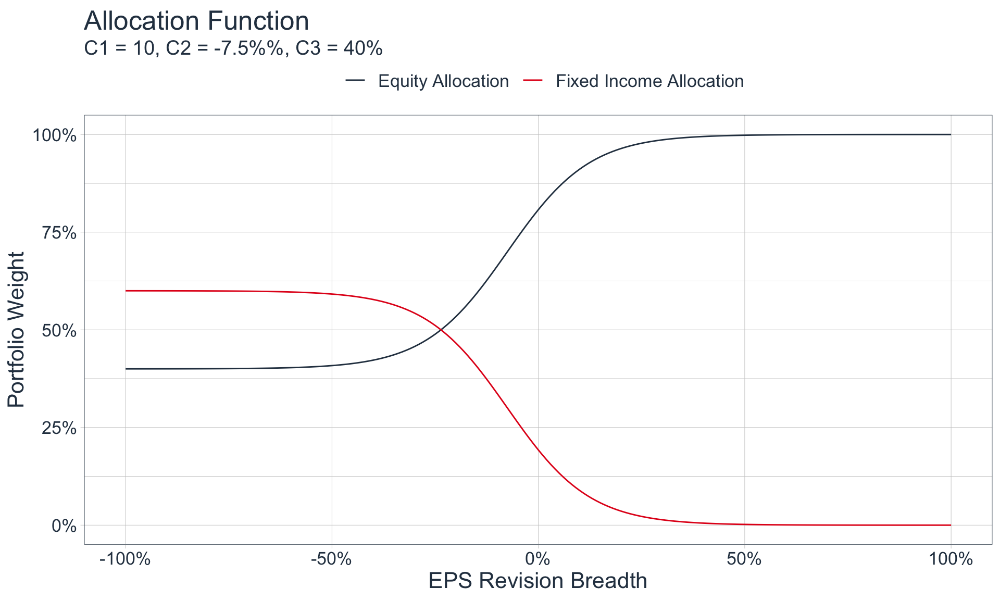

EPS Revision Breadth is a financial metric that measures the number of upward (positive) and downward (negative) revisions to earnings per share (EPS) estimates by analysts. It is calculated as the difference between the number of positive and negative revisions divided by the total number of revisions made.
So, if we consider 30 analysts, 20 of whom revised their earnings estimates upwards, and 10 of whom revised their earnings downwards, this would yield an EPS Revision Breadth of 33%.
This metric is important because it provides insight into the market’s confidence in a company’s earnings. A high breadth of positive revisions to EPS estimates indicates that analysts are becoming more optimistic about the company’s future earnings, which can be a sign of increased investor confidence and a potential increase in the company’s stock price. Conversely, a high breadth of negative revisions to EPS estimates can indicate declining investor confidence and a potential decrease in the company’s stock price.
As a result, EPS Revision Breadth has the potential to be a useful indicator for investors to assess the market’s sentiment towards a company’s earnings and make informed investment decisions. In the following, we will investigate EPS Revision Breadth for the SP500 as a whole, rather than for specific companies.
Thesis
Identifying tops and bottoms in EPS Revision Breadth can aid in distinguishing periods of strong vs. weak equity returns.
Since this data is cyclical and stationary, we can attempt to identify tops and bottoms, most simply, by partitioning the data into buckets based on its EPS Revision Breadth Value. The following chart demonstrates this by highlighting the top 10% of EPS RB in orange, and the bottom 10% in blue:
As we can see from the plot, highlighting the top and bottom 10% of values adequately identifies the peaks and troughs in the time series. However we clearly need to address the fact that the troughs similar to those identified in 2015 are systematically different from those that occur in 2008 and 2020 (shaded in red). We will therefore categorize troughs into two groups, which should be treated and analyzed differently:
Minor Troughs that arise as a natural artifact of the business cycle
Major Troughs that arise due to periods of extreme economic turbulence, typically after the popping of a financial bubble
The ability to distinguish between these two types of troughs is essential because it is unlikely that returns before, during, and after Major Troughs are similar to those for Minor troughs.
While we won’t dive into predicting when these Major Troughs occur here, I believe that tracking sector-level debt, the velocity & acceleration of that debt, and the speed, ability, and ease in which major players in those sectors can service their debt, is a key ingredient in modelling this out (see Bridgewater Research).
As such a basic decision tree could look as follows:
Code
mermaid("graph TDA(EPS RB < 10th Percentile?)-- No --> B[Not a Trough]B --> Z(Act accordingly...)A -- Yes --> C(Does separate model that includes Debt levels etc. indicate a Major Trough?)C -- No --> D[Minor Trough]C -- Yes --> E[Major Trough]D --> F(Act accordingly...)E --> G(Act accordingly...)")
Return Analysis
Lets identify average 1M, 3M, 6M, and 1YR returns, had you invested at points during a peak or trough in EPS RB:
Evidently, during times of lower EPS RB, returns are much lower than those during times when EPS RB is higher (for Time Horizons greater than 1 month). Therefore identifying where we are (and where we will be heading) in the EPS RB cycle is crucial.
From what we have seen thus far, we can establish these basic rules of thumb:
When EPS Revision Breadth is below its 10th Percentile (which translates to an EPS RB of approximately -16%), we should consider underweighting Equities
When EPS Revision Breadth is above its 90th Percentile (which translates to an EPS RB of approximately 24%), we should consider overweighting Equities
When EPS Revision Breadth is between these two values, weight Equities according to personal judgement
Building an Active Portfolio
Let’s utilize our basic heuristics to build an active, long-only portfolio, consisting solely of Equities and Fixed Income, with asset class weights that vary according to EPS Revision Breadth. In other words, the portfolio’s allocation to Equities and Fixed Income is a function of EPS Revision Breadth at certain point in time. Therefore, we need to define a function that under-weights Equities during periods of very low EPS Revision Breadth, and does the converse for periods with moderate to high EPS Revision Breadth.
As we can see, our function should be bounded between 0 and 1 on the y-axis, and have a similar shape to our ‘prototype’ above. These are both characteristics of the ‘sigmoid’ function:
\[
f(x) = \frac{1}{1 + e^{-c_1(x - c_2)}}
\]
If we test out a few constants, we see that the values of C1 = 20, and C2 = -7.5%, generates a function similar to our sample:
Code
sigmoid <-function(x, c1, c2){ y <-1/ (1+exp(-c1 * (x - c2)))return(y)}tibble(eps_rb =seq(-1, 1 ,by=.01),`Equity Allocation`=sigmoid(eps_rb, c1 =20, c2 =-.075),`Fixed Income Allocation`=1-`Equity Allocation`) %>%pivot_longer(contains("Allocation")) %>%ggplot(aes(eps_rb, value, color = name)) +geom_line() +scale_x_continuous(labels = scales::percent_format()) +scale_y_continuous(labels = scales::percent_format()) +theme_tq() +scale_color_tq() +labs(x ="EPS Revision Breadth", y ="Portfolio Weight", title ="Sigmoid Function", subtitle ="C1 = 20, C2 = -7.5%", color ="" ) +theme(legend.position ="top", text =element_text(size =16))

Portfolio Comparison
Let’s apply our weighting scheme above and compare its performance to a traditional, static 60/40 Portfolio, an SP500-only Portfolio, and a Fixed-Income-only portfolio. We will consider the iShares Core U.S. Aggregate Bond ETF (“The AGG”) as a proxy for Fixed Income.
Code
price_data <-tq_get(c("SPY", "AGG"), from ="2003-09-30") %>%select(symbol, date, adjusted)start_tbl <- price_data %>%group_by(symbol) %>%mutate(pct_ret = (adjusted /lag(adjusted)) -1) %>%ungroup() %>%select(-adjusted) %>%pivot_wider(names_from = symbol, values_from = pct_ret) %>%left_join(data_raw %>%select(-sp500_price))returns_and_index <- start_tbl %>%mutate(port_equity_weight =sigmoid(eps_revision_breadth, c1 =20, c2 =-.075),port_fi_weight =1- port_equity_weight) %>%drop_na() %>%mutate(portfolio_return = (port_equity_weight * SPY) + (port_fi_weight * AGG),portfolio_60_40_return = (.6* SPY) + (.4* AGG)) %>%pivot_longer(cols =c(SPY, AGG, contains("portfolio"))) %>%group_by(name) %>%mutate(price_index =cumprod(1+value)) %>%ungroup() %>%mutate(name =case_when( name =="SPY"~"SP500", name =="portfolio_60_40_return"~"60/40 Portfolio", name =="portfolio_return"~"Active Portfolio", name =="AGG"~"AGG" ))returns_and_index %>%ggplot(aes(date, price_index, color = name)) +geom_line() +theme_tq() +scale_color_tq() +theme(legend.position ="top", text =element_text(size =16)) +labs(x ="", y ="Wealth Index ($1)", color ="", title ="Portfolio Comparison") +scale_y_continuous(labels = scales::dollar_format())
As we can see, our portfolio outperforms the traditional 60/40 Portfolio, but under-performs the SP500, on a nominal basis.
However, when comparing the returns of these 4 portfolios on a risk-adjusted basis, our Active Portfolio fares very well, which means that our portfolio yields the most return per unit of risk.
For clarification, we consider investment returns as reward, and the standard deviation of returns (volatility) as risk. The Sharpe Ratio divides the average return by the standard deviation of these returns, while the Sortino Ratio divides the average return by the standard deviation of the negative returns only.
This occurs because our Active Portfolio is able to identify time periods when it is preferable to hold fixed income rather than equities, and vice versa. As a result, our portfolio has an average allocation of 75/25!
The red shaded region indicates the start of the Covid-19 Pandemic
As we can see, our portfolio underweights equities during times when EPS Revision Breadth is low, and overweights equities when EPS Revision breadth is high. However, we notice that it will therefore underweight equities in 2020, when the Covid-19 pandemic started.
While the start of the Covid-19 pandemic was momentous, markets severely overreacted, and many savvy investors capitalized on these overreactions. Unlike in 2001 and 2008, when market expectations plummeted due to the burst of a financial bubble, in 2022 market expectations plummeted due to frenzied speculation. Because of this, it is unlikely that a rational investor would have sold all of his equities; so, lets course correct our portfolio with human judgement.
Course Correcting w/ Human Judgement
Let’s assume that we are savvy investors, and that in March of 2022 we increased our allocation to equities to 75% because we understood that the markets were acting irrationally. If we do this while keeping everything else the same, here is how our active portfolio would have performed:
Code
returns_and_index_mod <- start_tbl %>%mutate(port_equity_weight =sigmoid(eps_revision_breadth, c1 =20, c2 =-.075)) %>%mutate(port_equity_weight =ifelse( date %>%between(major_troughs_tbl$start_date[2], major_troughs_tbl$end_date[2]), .75, port_equity_weight)) %>%mutate(port_fi_weight =1- port_equity_weight) %>%drop_na() %>%mutate(portfolio_return = (port_equity_weight * SPY) + (port_fi_weight * AGG),portfolio_60_40_return = (.6* SPY) + (.4* AGG)) %>%pivot_longer(cols =c(SPY, AGG, contains("portfolio"))) %>%group_by(name) %>%mutate(price_index =cumprod(1+value)) %>%ungroup() %>%mutate(name =case_when( name =="SPY"~"SP500", name =="portfolio_60_40_return"~"60/40 Portfolio", name =="portfolio_return"~"Active Portfolio", name =="AGG"~"AGG" ))returns_and_index_mod %>%ggplot(aes(date, price_index, color = name)) +geom_line() +theme_tq() +scale_color_tq() +theme(legend.position ="top", text =element_text(size =16)) +labs(x ="", y ="Wealth Index ($1)", color ="", title ="Portfolio Comparison") +scale_y_continuous(labels = scales::dollar_format())
Now, we notice that our active portfolio barely under-performs the market while still mitigating risk:
During the construction of our portfolio, we arbitrarily used C1 = 20 and C2 = -.075 as inputs for our sigmoid function because they replicated our rough, ‘prototype’ weighting scheme. In addition, these inputs seemed sensible for the average investor as they yielded, on average, a 75/25 weighting scheme. However, we can adjust these parameters depending on the risk appetite of the investor.
The following demonstrates graphically what occurs as you change C1:
As we can see, C1 represents our sensitivity to changes in EPS Revision Breadth, and C2 represents the EPS Revision Breadth value that corresponds to an equity allocation of 50%. Therefore, we can elect to modify our weighting scheme for different investment styles. The following could represent a sample weighting scheme for a more risk averse investor:
Code
tibble(eps_rb =seq(-1, 1 ,by=.01),`Equity Allocation`=sigmoid(eps_rb, c1 =10, c2 =0.1),`Fixed Income Allocation`=1-`Equity Allocation`) %>%pivot_longer(contains("Allocation")) %>%ggplot(aes(eps_rb, value, color = name)) +geom_line() +scale_x_continuous(labels = scales::percent_format()) +scale_y_continuous(labels = scales::percent_format()) +theme_tq() +scale_color_tq() +labs(x ="EPS Revision Breadth", y ="Portfolio Weight", title ="Sigmoid Function", subtitle ="C1 = 10, C2 = 10%", color ="" ) +theme(legend.position ="top", text =element_text(size =16))

Key Takeaways
As we can surmise from the analysis above, EPS Revision Breadth is a useful financial metric that reflects general market sentiment, which can help an investor position their portfolio accordingly.
Additional Areas of Exploration
While I will not do so here, the above can be extended and replicated for each sector within the SP500 - allowing for an active portfolio that dynamically overweights and underweights specific sectors over time according to each sectors EPS Revision Breadth. It would also be wise to include several other variables, attempt to build a major tough vs. minor trough classifier, and incorporate other asset classes in the portfolio for diversification benefits.
Final Remarks
The above is intended as an exploration of historical data, and all statements and opinions are expressly my own; neither should be construed as investment advice.